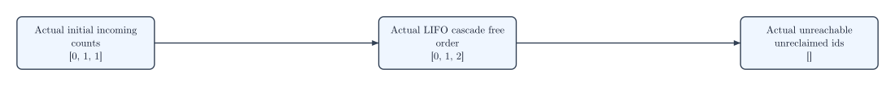
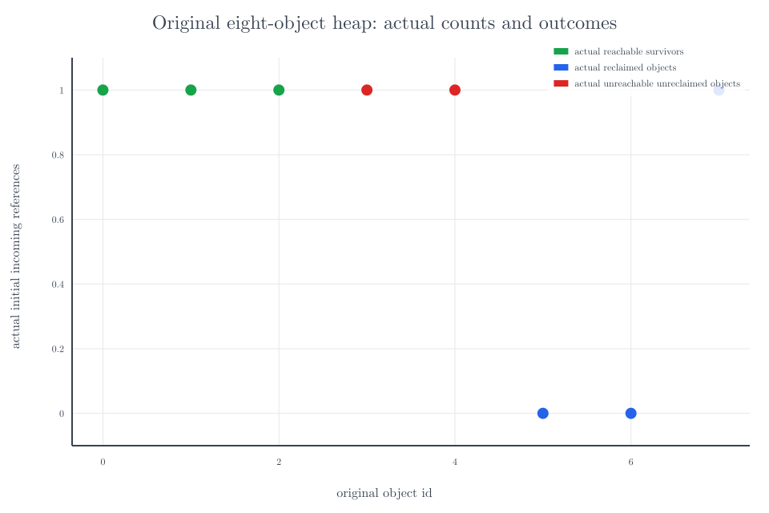
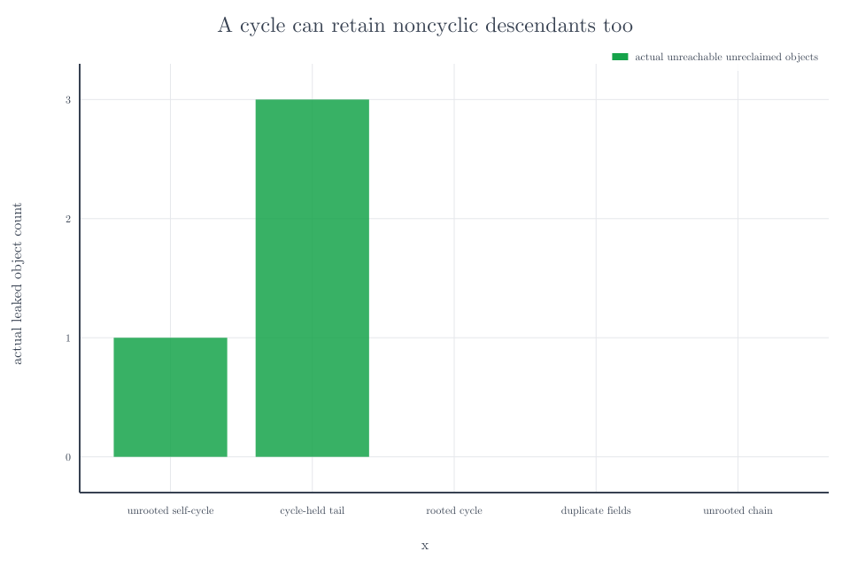
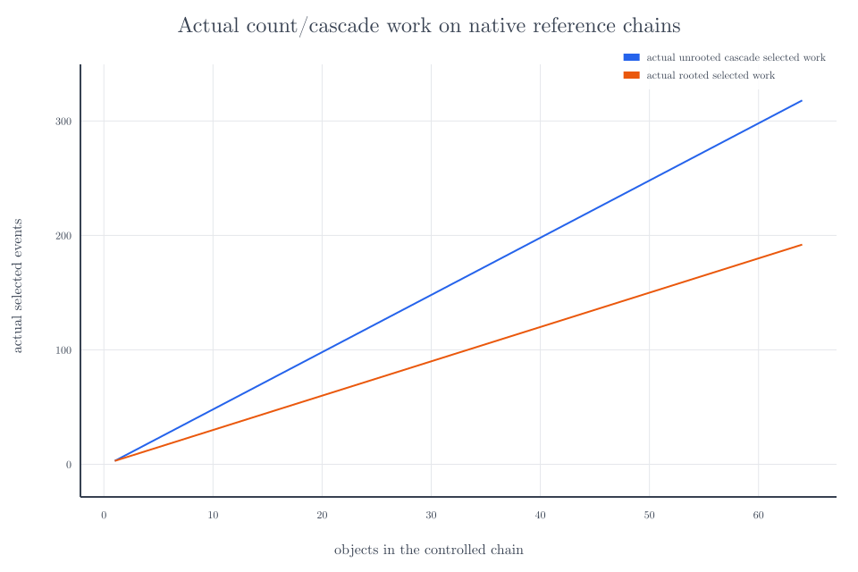

Reference counting: actual count mutations, cascading frees and cycle-held leaks
Abstract
A reference counter can reclaim an object as soon as its last incoming reference disappears, but cycles can keep unreachable objects alive. The native simulation counts every root and field, then records its actual LIFO zero-count cascade. The original eight-object heap remains. Explicit self-cycle, cycle-tail and duplicate-field controls distinguish actual reclaimed objects from all unreachable unreclaimed garbage.
Mechanism and mathematical scope
For each object v, initialize
Zero-count objects have no remaining incoming ownership edge. Reclaiming one removes each of its outgoing references, decrementing those targets and possibly producing new zeros. Induction over this cascade preserves each surviving object's actual incoming count. Duplicate roots and fields count separately; a field release occurs once for every stored field.
An unreachable cycle has no zero-count member, so the cascade cannot start inside it. Its outgoing references can also keep noncyclic descendants alive: leaked means every unreachable unreclaimed object, not only vertices that belong to a cycle. A separate canonical root-reachability traversal supplies that classification. Complete graph validation prevents out-of-range roots or unreachable fields from corrupting the count arrays. Simulation time/storage is linear in objects, fields and roots, plus optional actual event histories.
A tiny actual producing history
The table and native concept diagram read the same producing execution. Every block below is a complete editable C++ program.
#include <dm/dm.hpp>
int main() {
namespace a = dm::algorithms;
namespace g = dm::graphics;
std::filesystem::create_directories("build");
auto graph = a::reference_count_chain(3);
auto t = a::reference_counting_trace(graph);
std::print("\n| actual event kind (root0,field1,free2,release3) | actual source | actual target | count " "before | count after | actual pending zeros |\n| ---: | ---: | ---: | ---: | ---: | ---: " "|\n");
for (const auto &e : t.events)
std::print("| {} | {} | {} | {} | {} | {} |\n", int(e.kind), e.source,
e.target, e.before, e.after, e.pending);
g::Diagram d;
d.node("n0", {0, 0},
std::format("Actual initial incoming counts\n{}", t.result.refcount));
d.node("n1", {10, 0},
std::format("Actual LIFO cascade free order\n{}", t.freed_order));
d.node("n2", {20, 0},
std::format("Actual unreachable unreclaimed ids\n{}", t.result.leaked));
d.edge("n0", "n1").edge("n1", "n2");
d.save_svg("build/reference_counting_tiny.svg");
}| actual event kind (root0,field1,free2,release3) | actual source | actual target | count before | count after | actual pending zeros |
|---|---|---|---|---|---|
| 1 | 0 | 1 | 0 | 1 | 0 |
| 1 | 1 | 2 | 0 | 1 | 0 |
| 2 | 0 | 0 | 0 | 0 | 0 |
| 3 | 0 | 1 | 1 | 0 | 1 |
| 2 | 1 | 1 | 0 | 0 | 0 |
| 3 | 1 | 2 | 1 | 0 | 1 |
| 2 | 2 | 2 | 0 | 0 | 0 |

The retained original experiment
#include <dm/dm.hpp>
int main() {
namespace a = dm::algorithms;
namespace g = dm::graphics;
std::filesystem::create_directories("build");
const a::ObjectGraph graph{8, {{1}, {2}, {}, {4}, {3}, {}, {7}, {}}, {0}, {}};
auto t = a::reference_counting_trace(graph);
std::vector<double> live_x, live_y, free_x, free_y, leak_x, leak_y;
std::print("\n| original object | actual initial count | actual final count | reclaimed | unreachable " "unreclaimed |\n| ---: | ---: | ---: | --- | --- |\n");
for (int i = 0; i < graph.num_objects; ++i) {
const bool leaked =
std::find(t.result.leaked.begin(), t.result.leaked.end(), i) !=
t.result.leaked.end();
std::print("| {} | {} | {} | {} | {} |\n", i, t.result.refcount[i],
t.final_counts[i], bool(t.result.freed[i]), leaked);
if (t.result.freed[i]) {
free_x.push_back(i);
free_y.push_back(t.result.refcount[i]);
} else if (leaked) {
leak_x.push_back(i);
leak_y.push_back(t.result.refcount[i]);
} else {
live_x.push_back(i);
live_y.push_back(t.result.refcount[i]);
}
}
std::print("Actual reclamation order: {}. Actual leaked ids: {}.\n",
t.freed_order, t.result.leaked);
auto p = g::RPlot::create();
p.points(live_x, live_y, "actual reachable survivors", {22, 163, 74}, 7).points(free_x, free_y, "actual reclaimed objects", {37, 99, 235}, 7).points(leak_x, leak_y, "actual unreachable unreclaimed objects", {220, 38, 38}, 7).title("Original eight-object heap: actual counts and outcomes").x_label("original object id").y_label("actual initial incoming references");
p.save_svg("build/reference_counting_original.svg");
}| original object | actual initial count | actual final count | reclaimed | unreachable unreclaimed |
|---|---|---|---|---|
| 0 | 1 | 1 | false | false |
| 1 | 1 | 1 | false | false |
| 2 | 1 | 1 | false | false |
| 3 | 1 | 1 | false | true |
| 4 | 1 | 1 | false | true |
| 5 | 0 | 0 | true | false |
| 6 | 0 | 0 | true | false |
| 7 | 1 | 0 | true | false |
Actual reclamation order: [6, 7, 5]. Actual leaked ids: [3, 4].

Explicit controls
#include <dm/dm.hpp>
int main() {
namespace a = dm::algorithms;
namespace g = dm::graphics;
std::filesystem::create_directories("build");
const std::vector<a::ObjectGraph> cases{{1, {{0}}, {}, {}},
{3, {{1}, {0, 2}, {}}, {}, {}},
{2, {{1}, {0}}, {0}, {}},
{2, {{1, 1}, {}}, {}, {}},
a::reference_count_chain(3)};
const std::vector<std::string> labels{"unrooted self-cycle",
"cycle-held tail", "rooted cycle",
"duplicate fields", "unrooted chain"};
std::vector<double> leaks;
std::print("\n| actual control | actual free order | actual leaked ids | actual decrements |\n| --- | " "--- | --- | ---: |\n");
for (std::size_t i = 0; i < cases.size(); ++i) {
auto r = a::reference_counting_run(cases[i]);
leaks.push_back(r.result.leaked.size());
std::print("| {} | `{}` | `{}` | {} |\n", labels[i], r.freed_order,
r.result.leaked, r.decrements);
}
auto p =
g::RPlot::barplot(leaks, labels,
"actual unreachable unreclaimed objects");
p.title("A cycle can retain noncyclic descendants too").y_label(
"actual leaked object count");
p.save_svg("build/reference_counting_controls.svg");
}| actual control | actual free order | actual leaked ids | actual decrements |
|---|---|---|---|
| unrooted self-cycle | [] | [0] | 0 |
| cycle-held tail | [] | [0, 1, 2] | 0 |
| rooted cycle | [] | [] | 0 |
| duplicate fields | [0, 1] | [] | 2 |
| unrooted chain | [0, 1, 2] | [] | 2 |

Actual selected work and sensitivity
#include <dm/dm.hpp>
int main() {
namespace a = dm::algorithms;
namespace g = dm::graphics;
std::filesystem::create_directories("build");
std::vector<double> x, y, z;
std::print("\n| chain objects | actual unrooted selected operations | actual rooted selected operations " "| actual unrooted frees |\n| ---: | ---: | ---: | ---: |\n");
for (std::size_t n : {1, 2, 4, 8, 16, 32, 64}) {
auto unrooted = a::reference_counting_run(a::reference_count_chain(n));
auto rooted =
a::reference_counting_run(a::reference_count_chain(n, true));
x.push_back(n);
y.push_back(unrooted.operations);
z.push_back(rooted.operations);
std::print("| {} | {} | {} | {} |\n", n, unrooted.operations,
rooted.operations, unrooted.freed_order.size());
}
auto p = g::RPlot::create();
p.lines(x, y, "actual unrooted cascade selected work", {37, 99, 235}).lines(
x, z, "actual rooted selected work", {234, 88, 12}).title(
"Actual count/cascade work on native reference chains").x_label(
"objects in the controlled chain").y_label("actual selected events");
p.save_svg("build/reference_counting_work.svg");
}| chain objects | actual unrooted selected operations | actual rooted selected operations | actual unrooted frees |
|---|---|---|---|
| 1 | 3 | 3 | 1 |
| 2 | 8 | 6 | 2 |
| 4 | 18 | 12 | 4 |
| 8 | 38 | 24 | 8 |
| 16 | 78 | 48 | 16 |
| 32 | 158 | 96 | 32 |
| 64 | 318 | 192 | 64 |

API and interpretation
This is a checked graph simulation, not C++ shared_ptr or an allocator. Initial refcount and final_counts are distinct owned fields. Actual mutation history records count changes and real pending-stack length; it does not regenerate a cascade. The underlying ObjectGraph requires complete nonnegative dense ids; negative/null references are omitted rather than stored. The original graph size metadata is unused. Selected-operation counters exclude the separate complete validator and canonical reachability traversal, so they are not all CPU instructions, byte budgets or wall-clock costs.
Reusable producers, fixtures and histories live in the canonical C++ library. Captured records own their values and do not come from a separate report replay. Selected counters and record/scalar policies are specified at their API boundaries; they are not peak-byte or wall-time budgets. Synthetic structural inputs are controlled fixtures for these mechanisms.
References
Verification: 214 scoped native cases;15 directly instrumented ASan/UBSan
cases;127 executable public examples;567/567 full-file definitions;10
hovers;1340 independent records/58514 checks;frozen compatibility across six
changed legacy families;independent NumPy tensor-training comparisons with
recorded tolerances;12 checkout/installed standalone headers and linked
consumer;41 executed programs and41 inspected figures with both exports.
Receipts: build/mepml-conversion/batch-314-323/.